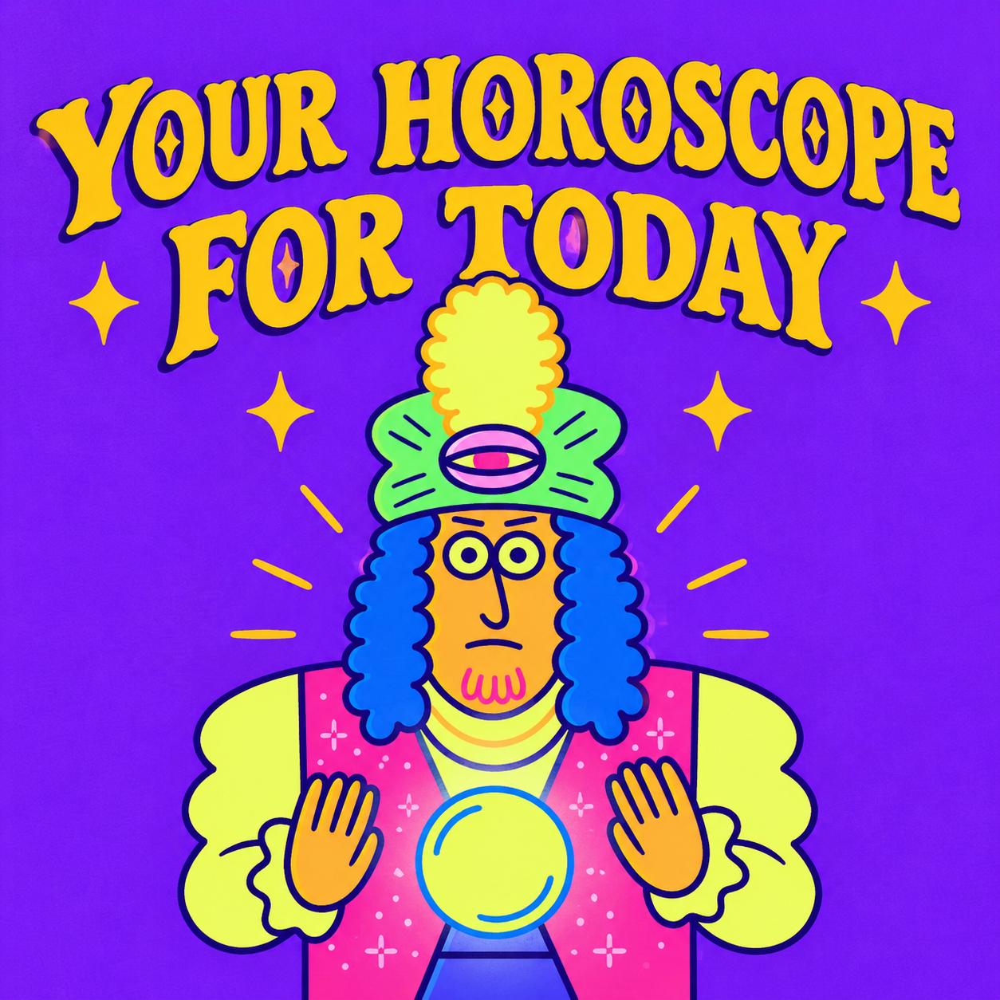

Imagem modificada com ajuda da inteligência artificial
"Your Horoscope for Today" é uma paródia de estilo de "Weird Al" Yankovic inspirada no ska de terceira onda, um gênero conhecido por seus ritmos acelerados e pelo uso marcante de instrumentos de sopro. A música conta com a participação de Tavis Werts e Dan Regan, integrantes da banda Reel Big Fish, que tocam trompete e trombone, respectivamente. Al conheceu os dois em uma première de cinema e posteriormente os convidou para participar da gravação.
A letra apresenta uma série de previsões astrológicas completamente absurdas e sem sentido, brincando com a ideia dos horóscopos encontrados em jornais e revistas. Segundo Al, a inspiração veio do jornal satírico The Onion e também dos horóscopos cômicos apresentados pelo radialista Gary Owens. Em vez de previsões tradicionais sobre amor, dinheiro ou carreira, a música apresenta conselhos e acontecimentos cada vez mais estranhos, tornando o próprio formato dos horóscopos o alvo da piada.
Uma curiosidade é que, quando algumas publicações começaram a divulgar Ophiuchus como um possível "13º signo" do zodíaco, Al entrou na brincadeira e publicou em 2011 uma nova previsão para o signo: "You'll become the center of attention when you replace every square inch of your skin with plexiglass". A frase segue o mesmo estilo absurdo das demais previsões da música.
Embora "Your Horoscope for Today" tenha sido originalmente lançada em 1999, a música ganhou um videoclipe animado apenas em janeiro de 2023, mais de 23 anos depois de seu lançamento. O vídeo foi produzido pela Augenblick Studios, responsável também pela animação da cena dos Amish em Weird: The Al Yankovic Story. O videoclipe é baseado na versão em quadrinhos da música presente no livro The Illustrated Al, adaptando visualmente os personagens e situações apresentados na publicação.
Com seu estilo ska, os instrumentos de sopro e uma coleção de previsões completamente absurdas, "Your Horoscope for Today" se tornou uma das músicas mais peculiares de Running with Scissors e um exemplo da capacidade de "Weird Al" de transformar um tema cotidiano em uma paródia musical cheia de criatividade.
Aquarius
There's travel in your future when your tongue freezes to the back of a speeding bus
Fill that void in your pathetic life by playing Whack-A-Mole seventeen hours a day
Pisces
Try to avoid any Virgos or Leos with the Ebola virus
You are the true Lord of the Dance, no matter what those idiots at work say
Aries
The look on your face will be priceless when you find that forty pound watermelon
in your colon
Trade toothbrushes with an albino dwarf, then give a hickey to Meryl Streep
Taurus
You will never find true happiness - what you gonna do, cry about it?
The stars predict tomorrow you'll wake up, do a bunch of stuff, and then go back to sleep
That's your horoscope for today (that's your horoscope for today)
That's your horoscope for today
That's your horoscope for today (that's your horoscope for today)
That's your horoscope for today
Gemini
Your birthday party will be ruined once again by your explosive flatulence
Your love life will run into trouble when your fiance hurls a javelin through your chest
Cancer
The position of Jupiter says you should spend the rest of the week face down in the mud
Try not to shove a roll of duct tape up your nose while taking your driver's test
Leo
Now is not a good time to photocopy your butt and staple it to your boss's face, oh no
Eat a bucket of tuna-flavored pudding, then wash it down with a gallon of strawberry Quik
Virgo
All Virgos are extremely friendly and intelligent - except for you
Expect a big surprise today when you wind up with your head impaled upon a stick
That's your horoscope for today (that's your horoscope for today)
That's your horoscope for today
That's your horoscope for today (that's your horoscope for today)
That's your horoscope for today
Now you may find it inconceivable or at the very least a bit unlikely that the relative
position of the planets and the stars could have a special deep significance or meaning
that exclusively applies to only you, but let me give you my assurance that these
forecasts and predictions are all based on solid, scientific, documented evidence,
so you would have to be some kind of moron not to realize that every single one
of them is absolutely true.
Where was I?
Libra
A big promotion is just around the corner for someone much more talented that you
Laughter is the very best medicine, remember that when your appendix bursts next week
Scorpio
Get ready for an unexpected trip when you fall screaming from an open window
Work a little harder on improving your low self-esteem, you stupid freak
Sagittarius
All your friends are laughing behind your back (kill them)
Take down all those naked pictures of Ernest Borgnine you've got hanging in your den
Capricorn
The stars say that you're an exciting and wonderful person, but you know they're lying
If I were you, I'd lock my doors and windows and never never never never never
leave my house again
That's your horoscope for today (that's your horoscope for today)
That's your horoscope for today
That's your horoscope for today (that's your horoscope for today)
That's your horoscope for today
That's your horoscope for today (that's your horoscope for today)
That's your horoscope for today
That's your horoscope for today (yay yay yay yay yay)
That's your horoscope for today